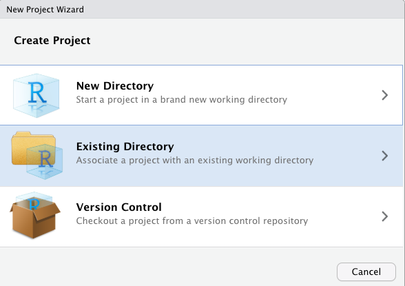

Chapter 2 Getting to know your data
Variables, Labels, and Subsetting
Learning Outcomes:
- Create a project in
Rto refer back to for each session - Learn what variables are and how to examine them in
R - Learn how to label variables
- Learn how to subset select cases
Today’s Learning Tools:
Total number of activities: 8
Data:
- National Crime Victimization Survey (NCVS)
Packages:
dplyrherehavenlabelledsjlabelledtibble
Functions introduced (and packages to which they belong)
add_column(): Adds columns to a data frame (tibble)attributes(): Access object attributes, such as value labels (base R)case_when(): Allows users to vectorize multiple if / if else statements (dplyr)count(): Counts the number of occurrences (dplyr)dir.create(): creates a new folder in a project (base R)factor()Creates a factor (base R)filter(): Subsets a data frame to rows when a condition is true (dplyr)get_labels(): Returns value labels of labelled data (sjlabelled)here(): Finds a project’s files based on the current working directory (here)mutate(): Creates new vectors or transforms existing ones (dplyr)read_spss(): Imports SPSS .sav files (haven)remove_labels(): Removes value labels from a variable (sjlabelled)remove_var_label(): Removes a variable’s label (labelled)sapply(): Applies a function over a vector or list (base R)select(): Select columns to retain or drop (dplyr)var_label(): Returns or sets a variable label (labelled)
Last time, we installed our first package, dplyr. This is one of a number of packages from what is known as tidyverse.
Tidyverse hex sticker
The tidyverse contains a packages that all serve to help us carry out tidy wrangling, analysis, plotting, and modelling of our data sets. The whole ethos of using the functions from these packages is that working in tidy formats makes our lives easier in the long run, and also allows us to stick to specific conventions, and share with others who follow this analytical approach.
So what is tidy data?

What is tidy data by Allison Horst
Our columns represent our variables, our observations our rows, and each cell is one value of the column’s variable for the observation in that row. In this course we will be working with tidy data. Generally, if you have messy data, your first task is to wrangle it, until it is in such a shape as described above.

Tidy data alike by Alison Horst
In this lesson, we use dplyr and other tidyverse packages to explore and get to know our data.
Being familiar with our data requires knowing what they comprise and what form they take. ‘Tidying’ our data through labelling, reformatting, recoding, and creating new variables will help with this step in the data analysis process. Today we will learn another three topics related to data tidying: variables, labels, and subsetting.
We will be using the following packages this week: dplyr, here, haven, tibble, labelled, and sjlabelled. You can see this above in the packages tab. Make sure you have each one installed. Remember to install a package you must run install_packages("packagename")!
Let’s get started and load dplyr:
library(dplyr)##
## Attaching package: 'dplyr'## The following objects are masked from 'package:stats':
##
## filter, lag## The following objects are masked from 'package:base':
##
## intersect, setdiff, setequal, union2.1 R Projects – Getting Your Work Files Organised
Although today is focused on tidying data, it is also helpful if your work is tidy and found in one easily accessible folder. By saving work inside a project, you can find files such as data and scripts related to specific work in a single working directory. Let us get into the habit of doing this:
2.1.1 Activity 1: Making yourself a project
• Click on the top right tab called Project: (None) - Figure 2.1
Figure 2.1 Click on Project: (None)
- Click on New Project. A window with different options appears. Create your project in New Directory and then click New Project
- Choose a name for your project (e.g., r_crim_course) and a location (working directory) where your project will be created
Then in the options that appear choose “Existing Directory”. This is because you already have a folder for this work, this is where you saved your script just before. For me this was my folder called ‘modelling2021’ you saw above.

So select ‘Existing Directory’, and on the next page use the “Browse” button to select this folder (the directory) where you saved the script earlier. Once you have done this, click on Create Project and your new project will be launched

This will now open up a new R Studio window with your project. In the future, you can start right back up where you finished last time by navigating to the .Rproj file, and double clicking it. It helps you keep everything in one place, and lets R read everything from that folder.
Inside your project, you can organise it by having separate files, one for scripts, one for data, one for outputs, and another for visuals. You can make these with the function dir.create():
# For example, to make a sub-folder called 'Datasets' in your project folder, type this into your console pane:
dir.create("Datasets")For example, to create the online tutorial for this class, we have a project called Modelling-Crime-Data-2021. Figure 2.2 shows that this title appears in the top right hand corner and its contents appear in the Files tab in the Files, Plots… pane.

Figure 2.2 How your project appears in R
If you noticed in your Files, Plots… pane, the files there tell you what folder you are automatically working in. This is known as your working directory, the default location that appears when you open RStudio. Wherever your R project is saved will be the working directory.
In your group google sheets, type the name of your R project and in which location it is in. Now decide whether this is a good location for your R project. For example, is the location name too long? (something like ‘C: xx Desktop Manchester’ is too long and you might run into problems later.) Or are there files that are for your other course units in there too? If doubtful about the location of your project, move it somewhere else you think is more appropriate.
Project, use the here package:
# First, you must install it if you have not done so:
install.packages("here")# Then bring it up with 'library()' because it may not come up automatically after installing it
library(here)Doing so is better than typing out the exact location of your file, which can be tedious. The next section shows how to use the here() function to import data from the National Crime Victimization Survey (NCVS).
You can read on why projects are useful here: https://www.r-bloggers.com/2020/01/rstudio-projects-and-working-directories-a-beginners-guide/
2.2 Importing Data
Here is another tidyverse package to install (if you haven’t already):
install.packages("haven")library(haven)haven enables R to understand various data formats used by other statistical packages such as SPSS and STATA. We will need this package to open data in its diverse forms. When we were using Excel last semester, you could only open specific type of files. With R, we can open a wide range of data files, which opens up many possibilities of analysis for us! Let’s give this a try now.
2.2.1 Activity 2: Importing and Viewing Data
Go to Blackboard > Learning materials > and Week 2, where you will find the data set ’NCVS lone offender assaults 1992 to 2013.
This data comes from the USA’s The National Crime Victimization Survey (NCVS). You can read more about it here: and find the data dictionary here: https://www.icpsr.umich.edu/web/ICPSR/series/95/variables
Download this, into your working directory. You can creat a subfolder for all data sets, to keep things neat and tidy. Here we’ve created a sub-folder called “Datasets”. When importing data with the here() function, in the brackets you must specify where the file is found, and what it is called.
For exmaple, in this case, we need to specify that it is in the sub folder “Datasets” and it is called “NCVS lone offender assaults 1992 to 2013.sav”. So the code to find the file is here("Datasets", "NCVS lone offender assaults 1992 to 2013.sav").
So that part tells R where it can find the file we want to import. Now we must use the appropriate function to read in our data set. We can tell, since the extension is .sav it is a file from spss, so the function we need is read_spss() from the haven package.
If the file came from Excel, which would have an extension .xlsx, we would use the function read_xlsx() from the readxl package.
How do I know this? Well like I said last week, we will be teaching you a whole collection of functions, which you can record in your function cookbook.
There are also external resources. For example, this cheatsheet for importing data. But for now, you can rely on us showing you the functions you need.
So back to reading in our data, you will have saved the NCVS in a relevant file in your project, so now let us load this data using read_spss() from haven:
# Importing our SPSS dataset and naming it ‘ncvs’
ncvs <- read_spss(here("Datasets", "NCVS lone offender assaults 1992 to 2013.sav"))What you are saying to R is the following:
My data, NCVS lone offender assaults 1992 to 2013, is a .sav file. Therefore, it is an SPSS dataset and is located in the sub-folder called Datasets in my default working directory.
R, please extract it from here, understand it, and place it in an object calledncvs, so I can find it inRStudio.
ncvs, type:
View(ncvs)A tab appears labelled ‘ncvs’. In it, you can view all its contents. In your group google sheets, type how many ‘entries’ and ‘columns’ there are in our dataframe, ncvs.
2.3 Today’s 3 (TOPICS)
We now have data to tidy in R, so onto our three main topics for this week: variables, labels, and subsetting.
2.3.1 Variables
Variables can be persons, places, things, or ideas that we are interested in studying. For example, height and favourite football team.
We explored a little bit about how to learn about what variables are in our dataset last week, let’s revisit this. In order to first understand about our ncvs data set, we could use View() as we did above, or also use dim() to get the dimensions of the dataframe (numer of rows and columns):
dim(ncvs)## [1] 23969 47We have 47 different variables! Wow! What are they all called? Well we can get the names of the variables using the names function.
names(ncvs)## [1] "YEAR" "V2119" "V2129"
## [4] "V3014" "V3016" "V3018"
## [7] "V3021" "V3023" "V3023A"
## [10] "V3024" "V2026" "V4049"
## [13] "V4234" "V4235" "V4236"
## [16] "V4237" "V4237A" "V4238"
## [19] "V4239" "V4240" "V4241"
## [22] "V4242" "V4243" "V4244"
## [25] "V4245" "V4246" "V4246A"
## [28] "V4246B" "V4246C" "V4246E"
## [31] "V4246F" "V4246G" "V4247"
## [34] "V4528" "injured" "privatelocation"
## [37] "reportedtopolice" "weaponpresent" "medicalcarereceived"
## [40] "filter_$" "relationship" "Policereported"
## [43] "victimreported" "thirdpartyreport" "maleoff"
## [46] "age_r" "vic18andover"We see that quite a few of these are codes. Sort of like the CSEW data we worked with last semester, where polatt7 for example was a variable asking about trust in police.
You could go back to viewing the dataframe and find the relevant column there, or you could look up the value in the data dictionary here. This tells us for example that V3014 is Age!
What about the level of measurement for these variables? Different variable types refer to different levels of measurement.
For categorical variables, we can have variables which are nominal (no order), ordinal (have an order), or a new category, can be binary (only two possible options, like yes/no).

Categorial variables by Allison Horst
Numeric variables can be classified two separate ways. Last semester we discussed the difference between interval and ratio variables. Interval have the same distance between observations, but have no true zero. Temperature in Celsius is one example. Ratio on the other hand does have a true zero point. For ratio numbers, calculating a ratio does make sense, for interval it does not. For example, there is not much meaning behind saying 20 degrees is twice as hot as 10! However, if Reka has £30 pounds in her bank account and Laura has £60, it is meaningful to say Laura has twice as much savings as Reka does.
Another way to classify numeric variables is to distinguish between discrete and continuous variables. Discrete numeric variables may be those which there are set values that make sense. For example crime is one such variable. It makes sense for there to be 30 burglaries in May, and there to be 50 burglaries in December, but it does not make sense to have 45.2482 burglaries. On the other hand continuous variable can take any value between a lower and upper bound, and it is meaningful. For example weight and height. Here’s a nice illustration:

Discrete v continuous by Allison Horst
2.3.1.1 So how does this translate to R?
In R, nominal and ordinal variables are encoded as a factor class because they are categorical characteristics, so take on a limited number of values; factors are like the integer vector introduced last week but each integer is a label.
Likewise, numeric variables are encoded as numeric.
2.3.1.1.1 Activity 3: Identifying a variable’s level of measurement
Generally you should be able to consider each variable and identify it’s level of measurement.
However, R can also help. Or occasionally, R may not quite grasp what kind of variable you may be working with. So it is important to find out what R thinks your variable falls into.
How do you ask R what your variable is ? Let’s give this a go using our ncvs data.
First, do you remember from last week how to refer to one specific column (variable) in your dataframe?
It is: dataframe$variablename
So if we want to find out about the variable ncvs$injured (whether the person was injured or not), we can refer to that specifically. Let’s use the attributes() function that allows us to look at what we have inside this variable.
# To see the class of a specific variable, such as the variable ‘injured’, we use:
attributes(ncvs$injured)## $label
## [1] "Victim Sustained Injuries During Vicitmization"
##
## $format.spss
## [1] "F8.2"
##
## $display_width
## [1] 10
##
## $class
## [1] "haven_labelled" "vctrs_vctr" "double"
##
## $labels
## uninjured injured
## 0 1# The $ symbol allows us to access specific variables in a data frame object
# The $ symbol must be accompanied by the name of the data frame!We can see the label (“Victim Sustained Injuries During Vicitmization”), and the values (at the bottom) which 0 for uninjured and 1 for injured. So this appears to be a categorical variable with 2 possible values - and therefore a binary variable.
Now, have a go yourself! Find out what is the class of the variable weaponpresent? In your googledoc, type out the answer and the code you used to get that answer.
You may have noticed that many of the variables in our data frame were classed as haven_labelled. What is this, you ask? When we use the haven() function to import data, R keeps the information associated with that file – specifically the value labels that were in the dataset. In practice, therefore, you can find categorical data in R embedded in very different types of vectors (e.g., character, factor, or haven labelled) depending on decisions taken by whomever created the data frame.
2.3.1.2 Formatting Classes and Value Labels
In some cases, you may want to make changes to how variables are classed. We can change our variable to specifically be classed as ‘factor’:
# Name the newly created factor 'injured_r'
#Specify the order we want our variable labels
ncvs$injured_r <- factor(ncvs$injured, labels = c("Uninjured", "Injured"))
table(ncvs$injured_r)##
## Uninjured Injured
## 16160 7809attributes(ncvs$injured_r)## $levels
## [1] "Uninjured" "Injured"
##
## $class
## [1] "factor"You can see this is no longer a “haven_labelled” type variable, now it is a “factor”. But remember these are R terms. This is still a categorical binary variable!
2.3.1.3 Recoding and Creating New Variables
So now we know how to read in data into R, and how to learn more about the variables present in the dataframe. But what if we want to do some analysis which might require a variable that we need to create? For example, let’s say we want to change the values of the injured variables from the numbers representing the values to the values themselves, to make them easier to read?
What about if we wanted to create a composite variable, like we did in making sense of criminological data with the fear of crime composite variable, made up of the many different scores? In this case, we might want to create a variable of the “severity” of the victimisation, made up of whether there was a weapon used, and whether there was a resulting injury? Or finally, we might want to change an existing variable. For example, the relationship between victim and offender in this data set is given by the variable relationship. There are 4 possible values this variable can take, 0 = stranger, 1 = slightly known, 2 = casual acquiant, and 3 = well known. Let’s say, we want to turn this ordinal variable with many categories into a binary variable with only two outcomes, stranger or not a stranger.
Well let’s tackle all these things in turn. This is a skill that you are developing calle data wrangling and it is facilitated mostly by our friendly dplyr package.

Data wrangling by Allison Horst
2.3.1.4 Activity 4: Creating a new variable for recoding an existing one
Let’s tackle the first problem first, we want to recode our existing injured variable. Why do we want to do this? Well let us try to make a frequency table of this variabe. Frequency table tells us the number of times each value for the variable is present in our data. We learned this in Making Sense using the Pivot Table function of Excel. In R, the way to create a frequency table of one variable is to use the function table(). Inside the function, write the reference to the column you want to create the frequency table for. In this case, the injured variable, referred to as ncvs$injured:
table(ncvs$injured)##
## 0 1
## 16160 7809This tells us that 16,160 people answered 0 to the question of whether they were injured in this specific victimisation instance, while 7,809 answered 1. Since we ran our attribute() function earlier, we know that 0 means no injury, and 1 means yes injury. However - we might forget this. Might it be better to recorde the 0 to no injury and the 1 to injury?
To do so we must create a new column To build a new column in a dataframe in R, you use the same approach like we created an object. Remember:
name <- "Reka"The only difference, is that we must attach the object (the column) to the dataframe, and that the number of things we put in this object box needs to match the number of rows in that dataframe. You must put something in every single row! Since we are creating a new variable from a column that already has the same number of rows, we should be OK.
Let’s first create a variable that is the exact same thing. Just for fun:
# 1. Create the new variable ‘injured_new’ from ‘injured’
ncvs$injured_new <-ncvs$injured Look at the ncvs dataframe. You will notice a new column appeared, but it has the exact same contents as the old one. We basically copied our column’s contents into the new one. But what about recoding?
A function you can use for recoding is as_factor(), also from the haven package. This function takes the labels assigned to the values of the variable, and recodes them into this.
ncvs$injured_r <- as_factor(ncvs$injured)Have a look at your dataframe now! Do you see this new column “injured_r”? What about if we make the frequency table again, now with this variable?
table(ncvs$injured_r)##
## uninjured injured
## 16160 7809Much easier to interpret, isn’t it?
And wasn’t this a lot easier, than messing arund with VLOOKUP last semester? Hmm?
2.3.1.5 Activity 5: Creating a composite variable from more than 1 existing variables
Now we want to create a new variable in our NCVS data that tells us about the severity of the victimization experienced by the respondent. That severity will be measured by two variables: (1) whether the offender had a weapon and (2) whether the victim sustained an injury during their victimization. These are not necessarily the best variables to use in measuring victimization severity; this example, however, should illustrate how you might combine variables to create a new one.
Before we decide to do this, we need to know if we can do so by first understanding those variables of interest. By using the function count(), we get a good sense of the values and the number of respondents in each of those values for both variables.
# Is the appropriate package, 'dplyr', loaded?
# You can check what package each function we learn today belongs to by referring to the top of each online lesson, under 'Functions Introduced'
# Using count ( ) for ‘injured’ and ‘weaponpresent’
count(ncvs, injured)## # A tibble: 2 x 2
## injured n
## * <dbl+lbl> <int>
## 1 0 [uninjured] 16160
## 2 1 [injured] 7809count(ncvs, weaponpresent)## # A tibble: 3 x 2
## weaponpresent n
## * <dbl> <int>
## 1 0 15814
## 2 1 6652
## 3 NA 1503This function tells us that injured, a binary variable, is stored as numbers, where the 0 value means the victim was uninjured and the 1 value means they were injured. Often in data, ‘0’ represents the absence of the feature being measured and ‘1’ means the presence of such feature. Also, the weaponpresent variable is also a binary variable stored as numbers. Here, more victims report that the offender did not use a weapon during the offence (n= 15,814) as opposed to using one (n= 6652). In addition, there are a number of missing values for this question (n= 1503).
Now what if we wanted to combine these, so we can have a score of severity, which takes into consideration presence of weapon and injury?
There is a particular function from the dplyr package that is very handy for creating a new variable from more than 1 variable. It is called mutate. The mutate() function will create a new column that comprises the sum of both of these variables, keeping the old variables too. The first argument inside this function is the dataframe into which we want to create the new variable, then after a comma, the equation we use to create the new variable.
The new variable is called severity and we create it from adding together the variables injured and weaponspresent meaning the equation to create this new variable is: injured + weaponspresent.
We save the dataframe with this new variable into the object ncvs thereby overwriting the existing dataframe object with the same name.
# Create the new variable with mutate
ncvs <- mutate(ncvs, severity = injured + weaponpresent)We now have a new variable called severity! Take a look at your data to see!
The severity variable is ordinal-level, where 0 is the least severe (neither a weapon was used nor the victim injured), 1 is more severe (either the offender wielded a weapon or the victim reported being injured), and 2 is the most severe (the respondent reported being injured and the offender had a weapon).
Let’s see another frequency table:
table(ncvs$severity)##
## 0 1 2
## 9945 10862 1659You can then add value labels to reflect this understanding. To over-write an existing variable, you call it’s name on the left-hand-side of the <- (assignment operator). On the right hand side, we can use the recode() function. The first thing to put in the recode() function is the variable we want to recode, and then we follow with a list of values. Notice that the numbers must be in a “`” quote mark.
ncvs$severity <- recode(ncvs$severity, `0` = "not at all severe", `1` = "somewhat severe", `2` = "very severe")Have a look at the frequency table once more"
table(ncvs$severity)##
## not at all severe somewhat severe very severe
## 9945 10862 1659Much more meaningful!
–>
The above example was simple, but often, we will want to make more complex combinations of variables. This is known as recoding. And it will constitute our next activity.
2.3.1.6 Activity 6: Recoding
For example, let’s say we want to turn the variable in the NCVS dataset, called relationship, into a dichotomous variable called notstranger whereby the offender was a stranger (0) or was known to the victim (1).
Before doing this, we again use the table() function to create a frequency table of the variable of interest, relationship, and it has four categories.
table(ncvs$relationship)##
## 0 1 2 3
## 6547 2950 4576 9227What do these categories mean? We can use the as_factor() function earlier to see:
table(as_factor(ncvs$relationship))##
## stranger slightly known casual acquiant well known Don't know
## 6547 2950 4576 9227 0So we see, 0 = stranger, 1 = slightly known, 2 = casual acquiant, and 3 = well known. We see there is also a don’t know option, but there are no observations in this category.
Anyway, we want to turn this into a binary variable. So let’s use mutate(), which we already know about, and a new function called case_when(). Think of case_when() like an ‘if’ logical statement. It allows us to make changes to a variable that are conditional on some requirement. Note below that this turns our new categories into character values. In the case when X then do Y.
So we see we are saying the new variable ‘notstranger’ get’s the values in the cases when relationship is equal to 0, and get’s the values of not stranger when the relationship value is equal to 1, or relationship value is equal to 2, or relationship value is equal to 3! To tell R or we use the | operator. (The opposite of or (|) is and which is represented by &).
ncvs <- mutate(ncvs,
notstranger = case_when(
relationship == 0 ~ "Stranger",
relationship == 1 |
relationship == 2 |
relationship == 3 ~ "Not a stranger"))You could also say, if it is 0 then stranger, and if it is greater than 0 then it is not a stranger. Like so:
ncvs <- mutate(ncvs,
notstranger = case_when(
relationship == 0 ~ "Stranger",
relationship > 0 ~ "Not a stranger"))Same results.
Now we can see:
table(ncvs$notstranger)##
## Not a stranger Stranger
## 16753 6547Evidently most victimisation is perpetrated by non-strangers!
2.3.2 Labels
Variables sometimes come with labels – these are very brief descriptions of the variable itself and what its values are. We are familiar with these because of our previous activities. Value labels are very useful when we have a nominal or ordinal level variable in our dataset that has been assigned numeric values. To have a look at what are your variable and value labels, use the function attributes():
attributes(ncvs$injured)## $label
## [1] "Victim Sustained Injuries During Vicitmization"
##
## $format.spss
## [1] "F8.2"
##
## $display_width
## [1] 10
##
## $class
## [1] "haven_labelled" "vctrs_vctr" "double"
##
## $labels
## uninjured injured
## 0 1# You can also use var_label() and get_labels() too, but attributes() shows both types of labelsThe output in the console show that uninjured is labelled ‘0’ and injured is labelled ‘1’. Maybe, though, you do not like the labels that are attached to the variable values. Perhaps they do not make sense or they do not help you to understand better what this variable measures. If so, we can remove and change the labels.
2.3.2.1 Activity 7: Removing labels
Let us return to the injured variable from the ncvs dataframe. We, again, are going to make a duplicate variable of injured to learn how to remove and add labels. We do this because it is good practice to leave your original variables alone in case you need to go back to them.
# Make a new variable that is a duplicate of the original one, but naming it ‘injured_no_labels’
ncvs$injured_no_labels <- ncvs$injured
attributes(ncvs$injured_no_labels)## $label
## [1] "Victim Sustained Injuries During Vicitmization"
##
## $format.spss
## [1] "F8.2"
##
## $display_width
## [1] 10
##
## $class
## [1] "haven_labelled" "vctrs_vctr" "double"
##
## $labels
## uninjured injured
## 0 1To remove labels, we will need to load two new packages: labelled and sjlabelled. Can you do that?
After loading the two new packages, we remove variable and value labels:
# Remove variable labels
ncvs$injured_no_labels <- remove_var_label(ncvs$injured_no_labels)
# Check that they were removed
var_label(ncvs$injured_no_labels)## NULL# Remove value labels
ncvs$injured_no_labels <- remove_labels(ncvs$injured_no_labels, labels = c(1:2))
# Check that they were removed
get_labels(ncvs$injured_no_labels)## NULL# Add variable label
var_label(ncvs$injured_no_labels) <- "Whether Victim Sustained Injuries"
# Check that they were added
var_label(ncvs$injured_no_labels)## [1] "Whether Victim Sustained Injuries"# Add variable label
ncvs$injured_no_labels <-add_labels(ncvs$injured_no_labels, labels = c(`uninjured` = 0, `injured` = 1))
# Check that they were added
get_labels(ncvs$injured_no_labels)## [1] "uninjured" "injured"Nothing to add in the googledoc this time, so onto the next activity.
2.3.2.2 Note: pipes

In R, %>% represents a pipe operator. This is a nifty shortcut in R coding. It means that we only need to specify the data frame object once at the beginning as opposed to typing out the name of the data frame repeatedly. In all subsequent functions, the object is ‘piped’ through. If you were to read the code out loud, you might say a pipe as “and then”. We will use this now.
2.3.2.3 Activity 8: Subsetting
Through tidyverse functions, we can subset our data frames or vectors based on some criteria. Using the function select(), we can subset variables by number or name:
# Using select () to subset by two variables
ncvs_df <- ncvs %>% select(1:2) or if we wanted to select only the variables injured, weaponpresent, and severity:
# Using select () to subset by two variables
ncvs_df <- ncvs %>% select(injured, weaponpresent, severity) Using the function slice(), we can subset rows by number. To get only the first row:
# Get the first row
first_row_of_ncvs <- ncvs %>% slice(1) To get more rows, you can use from:to notation. To get the first two for example, you say from 1 to 2, that is 1:2 like this:
# Get the first two rows
first_two_rows_of_ncvs <- ncvs %>% slice(1:2) You can combine these, for example take slice() and combine it with select(). For example:
# Combine with above function to get the first two variables, and first two rows
first_two_rows_cols <- ncvs %>% select(1:2) %>% slice(1:2)Use the filter() function to subset observations (i.e., rows) based on conditions.

Filter by Allison Horst
For example, let’s say in our example we only want those for which the injured variable was equal to 1, so we run:
only_injured <- ncvs %>% filter(injured == 1)These filters can be combined using conditions and (&) and or (|) to produce data similar to the one from the variable ‘notstranger’ except we call this subset of the dataframe ‘knew_of_and_injured’:
knew_of_and_injured <- ncvs %>%
filter(relationship > 0 & injured == 1)Say if we wanted the first five rows of knew_of_and_injured. How would we do that? In your group googledoc, type out the code you think will help you create a (sub-)subset knew_of_and_injured of its first five rows. Call this new subset ‘injuredfiveknew’.
2.3.2.4 Activity 9: Subsetting, the Sequel
We now have a subset called injuredfiveknew. Say we only want to keep the variables V3014 (age) and V3018 (sex). How would you make an object that only contains these two variables from injuredfiveknew?
Recall that you would need to use the function select()to select variables. But in this example, instead of inserting ‘:’ like in the previous code, you would need to insert a ‘,’. Understanding what ‘:’ means and viewing the order of the variables in injuredfiveknew will give you insight into why.
In your group googledoc sheet, write out the code that you would use to do so. Name this new object that contains the two variables five_ageandincome
2.4 SUMMARY
Today you were further introduced to tidyverse packages that helped you to tidy your data. First, we learned to put our work into a project and then how to import data using a package called haven. Whenever we specify a data frame, we learned a nifty short-cut: the pipe operator - %>% - which allows us to specify the data frame only once when we code.
Our three main topics today had to do with helping us tidy. One were the variables themselves where we learned about the factor and numeric classes, and how to make and recode new variables. Two, we learned how to remove and add variable and value labels so that we can understand what our variables are measuring. Three, we then learned to subset our data, whereby we make new dataframes that include only the columns – variables – or rows – cases – we want. We tidied our data using the TIDYVERSE WAY!
Well done today, to get through all this. What you are learning now will serve as the building blocks for your analysis, and we recognise it is all new, and scary. But keep practicing, and you will get the hang of this in no time! And of course: don’t forget to do your homework!